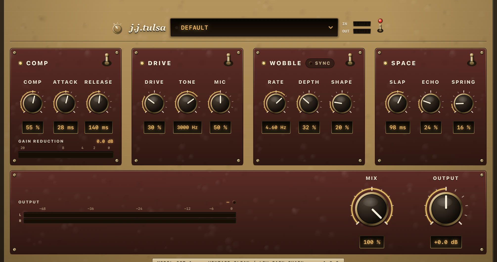
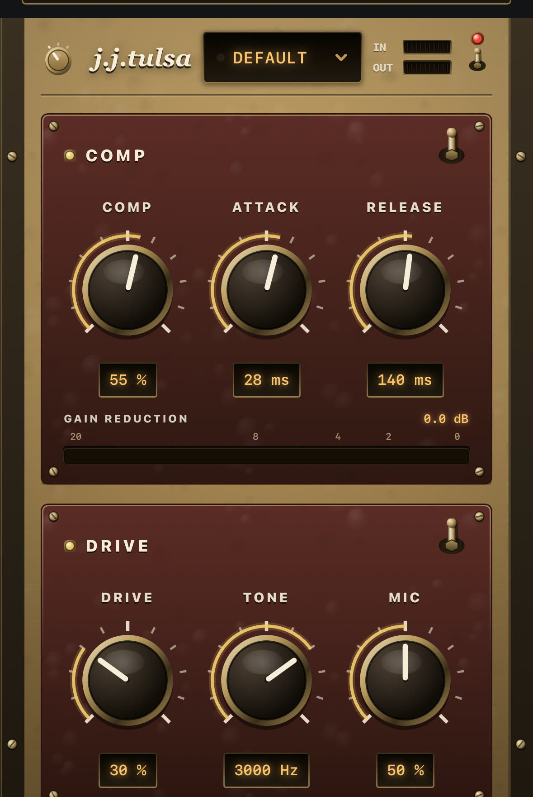
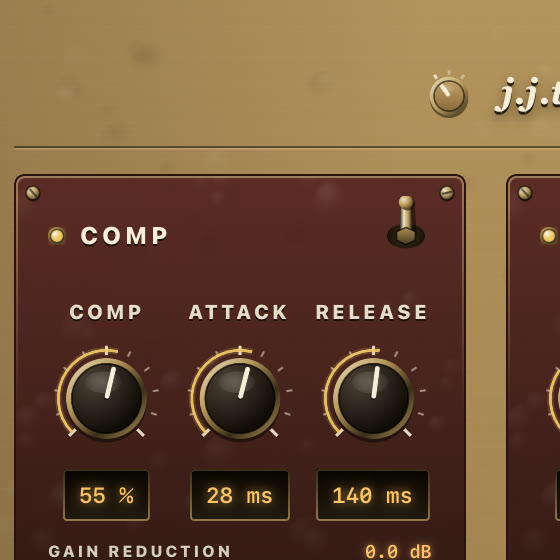

Squashed until nothing jumps out. Just past clean. Wobbling a little. One repeat behind. It is not one pedal — it is the whole chain, and jj-midnight is all of it in a single insert.

Free · 7-day trial · then $2.99 once · Open the app, tap Play, then load jj-midnight in your host
Early-70s Oklahoma. Nothing loud, nothing shiny, nothing in a hurry. Load a preset and you are in that neighbourhood — original settings, not recreations of any recording.
Heavy compression with a slow recovery, drive barely past clean, tone rolled off. The core of the whole thing. Start on Laid Back.
Mic well off-axis, spring almost out, the slapback doing the room work instead. Load Escondido.
Tremolo deep enough to be the loudest thing in the chain, everything else out of its way. Load Whisper Trem.
jj-midnight is an original effect. Preset names point at a feel, a place, or a song of the era — never at a recreation of a particular recording — and the plug-in is not affiliated with any artist, label, or third-party vendor.
Each block has its own on/off, so you can take any one of them on its own. The compressor is first for a reason: it is what makes everything after it sit down.
Optical. Slow to let go, slower the harder you hit it.
Edge-of-breakup, then a 1×12 with the mic off-axis.
Amp tremolo, from a rounded sway to a hard chop.
One slapback repeat, then a spring tank behind it.
The companion app is a real host, not an empty wrapper. Hear the effect on a dry guitar part before you open a DAW.
Install jj-midnight and launch it once. Pick one of the three guitar parts and tap Play. All of them are dry, so everything you hear on top of them is the plug-in.
That first launch registers the Audio Unit. In GarageBand, Logic for iPad, AUM, and other AUv3 hosts it appears as jj-midnight (manufacturer Gerov).
Every block has its own switch. Use Comp alone as a front-end on a DI, or Space alone for slap and spring. Knobs stay put when a block is off.
Lacquered tweed, an oxblood sub-plate per block, bakelite knobs in brass collars, bat switches and smoked-glass readouts — all drawn procedurally, so it stays sharp at any size your host gives it. Tap a screenshot for a larger view.


This is a chain, not a rack of parallel sends: each block feeds the next, the way pedals into an amp do. Master Mix puts the whole thing in parallel with the dry signal if you want it that way.
An optical compressor, and the reason the rest of the chain sits down. Its release is program dependent: a light squeeze lets go in a fraction of a second, a hard one takes well over a second to come back — so transients get rounded but a held note never pumps back up at you.
Low-gain breakup with asymmetric clipping — second harmonic as well as third, which is the difference between a tweed amp starting to give and a fuzz at low gain. Behind it sits a 1×12 cabinet whose mic you can move off-axis.
Amp-style amplitude tremolo — one LFO for both channels, because an amp's tremolo circuit modulates the whole output stage. Shape morphs it from a rounded blackface sway to a harder optical chop.
A single slapback repeat with no feedback — one echo, not a decaying train — into a spring tank. The tank is built from a chain of dispersion allpasses, which is where a real spring's descending chirp comes from.
A bar under Comp's own knobs, filling right to left: empty at rest, growing leftwards as the compressor takes hold. It is a damped mass on a spring rather than a smoothed value, so it overshoots a little and settles the way a moving-coil meter does. The whole point of the front end is a compressor you are not supposed to hear, so what you need to see is how much it is taking.
Stereo output bars on the master strip, with peak-hold ticks and a clip lamp that latches. This chain can add a lot of level by itself — the compressor's make-up reaches +13 dB and Drive adds more — so a clip after all that is easy to miss.
Master Mix is dry/wet for the entire chain — leave it at 100% on a guitar track, pull it back to use jj-midnight as a parallel colour on something else. Output is a ±12 dB trim after it.
Each block has its own bat switch and indicator lamp. Throwing it bypasses that block without wiping knobs — the DSP keeps running, so switching back is click-free. The power switch in the header is a full dry bypass.
The rotary selector left of the wordmark turns the panel from Tweed to Field Green or Slate — lacquered cloth and brass, hammered military enamel, or blue-grey gunmetal, with hardware and lamp colours to match. Your choice is remembered.
The preset window is the whole workflow: tap it for factory and user presets, Save As… to keep the current knobs, and swipe a user preset left to rename or delete it. A dot next to the name lights when you have edited a preset.
Same recall in the panel's preset window and in the host. Save As… keeps your own next to the factory ones; swipe one left to rename or delete it.
The middle of the road: everything on, nothing extreme. A good place to start turning knobs.
Heavy comp with a slow recovery, drive barely past clean, tone rolled off. Nothing jumps out.
Darker and drier. Mic well off-axis, spring nearly out, the echo doing the room work.
Clean and open. No breakup to speak of, spring carrying it instead.
Tremolo forward and everything else out of the way.
Comp alone. A clean, level DI with the front-end glue and nothing after it.
Slow and close. Barely any breakup, tone well down, the slowest sway in the set. Intimate rather than spacious.
The rolling shuffle: brighter, bouncier, barely any breakup, tremolo quick enough to sit with it.
Clean and funky with the tremolo well forward — the one where Wobble is the loudest thing.
The slow one. Heaviest compression, slowest release, tone right down, tank open.
Squashed flat and rolled right off. The bedroom-pop guitar sound out of the same four blocks.
Wobble doing the tape-warble job, slapback long and loud.
Ambient. No tremolo, tank wide open, drive just enough to bloom.
Save As… from the preset window. User presets sit next to the factory ones and recall in the host too.
Preset names point at a feel, a place, or a song title of the period. They are original settings arrived at by ear, not recreations of anyone's signal chain, and jj-midnight is not affiliated with any artist, label, or third-party vendor.
Install the app, open it once, then look for jj-midnight in any AUv3 host. Type aufx, subtype Jjm1, manufacturer Grov.
Audio FX → Audio Unit Extensions → jj-midnight. Works on an Audio Recorder track or any audio track.
Audio Units → Gerov → jj-midnight. Same editor, same presets as the standalone app.
AUM, Cubasis, BeatMaker, and other AUv3 hosts list it as jj-midnight. Open the companion app once if it does not appear yet.
Squashed until nothing jumps out. Just past clean. One repeat behind.
iPhone and iPad · iOS 17+ · Free download, 7-day trial, then one-time unlock. No account. Open the app, tap Play, then load the same effect in your DAW.
Download on the App Store